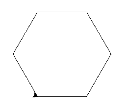
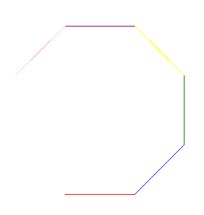
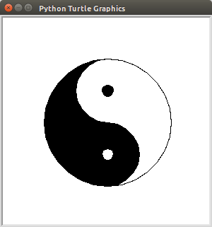
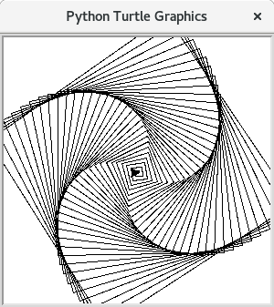

Einleitung
Diese Anleitung wird zur Geschlechtsneutralen Formulierung SuS für Schülerinnen und Schüler sowie LuL für Lehrerinnen und Lehrer verwenden.
Diese Texte sind geschrieben um im Unterricht als Lernbegleitliteratur für die SuS zur Verfügung gestellt zu werden. Während die SuS arbeiten, können sie die Anleitung als Hilfe konsultieren. Damit werden die LuL frei einzelnen SuS bei Problemen zu helfen ohne, dass die ganze Klasse warten muss.
Die SuS können mit dieser Anleitung theoretisch alleine arbeiten, es hat sich jedoch als sinnvoller erwiesen, wenn immer wieder die behandelten Themen an der Tafel oder im Unterrichtsgespräch vorgestellt oder wiederholt werden, sodass die verschieden lernenden und verschieden begabten SuS unterschiedliche Lernmedien zur Verfügung haben, um den Inhalt zu verstehen. Da diese Live-Unterrichtsabschnitte immer wieder eingeschoben werden sollten, ist es trotz dieser Anleitung hilfreich, wenn die Klasse ungefähr auf einem Stand ist sodass gemeinsames Arbeiten möglich ist.
Diese Anleitung ist nicht als "richtige" oder "einzige" Möglichkeit gedacht sondern möchte vielmehr kreativ im Unterricht eingesetzt werden. Viele der Kapitel können in von der hier gewählten Reihenfolge abweichend unterrichtet werden. Nicht jedes Kapitel ist unbedingt notwendig und manche der Kapitel können umgeschrieben werden, um der eigenen Unterrichtsweise und dem Unterrichtsbedürfnis der Klasse gerechter zu werden.
Diese Anleitung kann natürlich auch von einzelnen SuS oder anderen Personen zur Vorbereitung auf ein Projekt oder zum lernen eingesetzt werden.
Es ist nicht Ziel dieser Anleitung echte Programmierer oder Programmiererinnen aus den SuS zu machen. Vielmehr sollen die SuS kennen lernen, was Programmierung ist. Dementsprechend wird auch nur ein sehr begrenzter Umfang der Programmiersprache Python überhaupt erklärt. Wer wirklich den gesamten Umfang der Sprache lernen möchte muss auf jeden Fall auch Zusatzliteratur konsultieren.
Installation
Alle in dieser Anleitung enthaltenen Übungen und Beispiele können mit dem extra für SuS gestalteten Programm thonny gelöst und ausprobiert werden. Das Programm hat für den Unterricht den Vorteil, dass es einfach und verständlich ist, sowie gleichzeitig nicht zu viele Extras beitet, die die SuS ablenken könnten. Wer selbst arbeitet und etwas mehr Comfort wünscht, wie zum Beispiel Autovervollständigung, der kann gerne auch andere Editoren verwenden: atom, vs-code, notepad++, ... uvm.
In dieser Anleitung wird nur sehr kurz erklärt, wie thonny installiert werden kann. Die Webseite des Editors ist: https://thonny.org/
Auf der Webseite können Anleitungen für verschiedene Betriebssysteme angesehen werden. Für MacOS und Windows ist es einfach der gewohnte Vorgang:
- herunterladen der Datei
- ausführen der Installationsdatei
- einige Male bestätigen
- das Programm starten
Auch für Linux ist der Vorgang eigentlich der gewohnte. Die meisten Distributionen haben thonny mit an Bord. Das heißt es kann vermutlich mit einem der beiden Befehle installiert werden.
# sudo apt-get install thonny
# sudo dnf install thonny
Auch die grafischen Installationsprogramme bieten die Möglichkeit thonny zu installieren.
Ist das Programm installiert sind keine weiteren Einrichtungsschritte mehr nötig. Beim ersten Start benötigt thonny etwas länger um alles einzurichten. Das Programm ist unter den verschiedenen Betriebssystemen nahezu identisch.
In diesem Buch wird davon ausgegangen, dass Linux verwendet wird. Linux eignet sich hervorragend für die Computerräume von Schulen, da es den SuS nicht so geläufig ist. Sie können also nicht so souverän damit umgehen und sind insbesondere wesentlich langsamer im Unfug anstellen. Die für den Unterricht notwendige Bedienung ist jedoch so intuitiv, dass die Arbeit für den Unterricht nicht behindert wird. Mit ltsp sowie linuxmuster hervorragende Umgebungen, die es ermöglichen die Computer zentral zu verwalten.
Programmieren
Nachdem nun die Voraussetzungen geschaffen sind kann das eigentliche Programmieren los gehen. In diesem Buch wird die Programmiersprache Python behandelt.
Was ist Python
Python ist eine Programmiersprache oder wenn man es genau nimmt eine Skriptsprache. Mit Python können sehr viele unterschiedliche Typen von Programmen geschrieben werden (Spiele, Musikspieler, Texteditor usw.).
Geschichte
Schon 1990 entstand der Erste Vorschlag der Programmiersprache Python. Seit diesem Zeitpunkt wird die Sprache weiter entwickelt. 2008 kam die letzte große Version der Sprache heraus: Python 3
Das Ziel der Python Programmiersprache ist es einfach und kompakt zu sein. Die Einfachheit ist gut für SuS die versuchen sie zu lernen, die Kompaktheit ist gut für LuL, die die Sprache mit dem Beamer präsentieren.
Die Sprache Python rangiert in den Top 10 der häufigst verwendeten
Programmiersprachen und ist 2017 zu der Sprache gewählt worden die Entwickler am
liebsten verwenden würden.
Quelle: Stackoverflow Survey
Die Letzten vier Jahre ist rust auf diesen Platz vorgerückt. Es könnte auch interessant sein rust mit den SuS zu erlernen. Ist es doch eine typischere Programmiersprache mit Compiler und Speicherverwaltung.
Ein erstes Beispiel
Ziel dieses Kapitels:
- Ausprobier-Fenster
- erste Rechenbefehle
Es wird immer wieder Übungen geben. Für dieses Kapitel besteht die Übung darin mit Python einige Rechenaufgaben zu berechnen. Die Aufgaben beziehen sich fast immer auf die Erklärungen unmittelbar davor.
Als Erstes wird das Programm thonny geöffnet.
Es muss hierzu unter Windows und Linux:
- die
[Windows]-Taste gedrückt thonnyeingegeben- die Auswahl mit
[Enter]bestätigt werden. (Das ist die "Neue Zeile"-Taste)
Nach dem Start sieht Thonny so aus:

Thonny ist speziell für Unterricht an Schulen und Universitäten geschrieben. Es bietet einen reduzierten Funktionsumfang für die Lehre und bietet noch einige Zusatzfunktionen, die nur für die Lehre verwendet werden.
Die Grundstruktur des Programms ist oben die Menüleiste, darunter die Steuerungs-Knöpfe. Unter diesen Beiden Menüs kommen zwei Bereiche. Der Obere ist um Pythondateien zu verändern, der untere, um Python-Befehle "auszuprobieren".
Zunächst liegt der Fokus auf dem unteren Teil, welcher den Titel Shell hat und den Inhalt >>>.
Dieses "Pfeil"-Symbol ist das Zeichen dafür, dass Python gestartet ist und man es nun verwenden kann.
Jede Eingabe, die man im unteren Teil macht, muss man mit Enter (also der Neue-Zeile-Taste) bestätigen.
Sollte einmal die Zeile nicht mit >>> beginnen, so ist etwas mit Python nicht in Ordnung und man startet am besten nochmal vom Anfang des Beispiels, indem man oben auf das kleine "Stopp"-Symbol klickt.
Hat ein Befehl ein Ergebnis, so wird dieses direkt ausgegeben. Keine Panik; nach dem Beispiel werden die Zeilen einzeln erklärt.
Werden einige Befehle in Python eingegeben könnte das so aussehen:
>>> 1
1
>>> 1+1
2
In Zeile 1 des Beispiels wurde einfach eine Zahl 1 eingegeben.
Python antwortet darauf einfach, indem es dieselbe Zahl wiedergibt.
In Zeile 3 wird eine einfache Rechenaufgabe in Python gestellt. Woraufhin Python diese berechnet und das Ergebnis zurück gibt.
Der Computer wird auch als Rechner bezeichnet, das liegt daran, dass er nie irgendetwas anderes tut als Berechnungen auszuführen. Wird ein Computerspiel gestartet, so ist das Bild auf dem Bildschirm das Ergebnis einer (sehr komplexen) Berechnung. Das heißt natürlich auch, dass die einfachsten Befehle, die man in einen Computer eingeben kann die Rechenoperationen sind.
Es können so alle Grundrechenarten verwendet wobei die folgenden Rechenzeichen verwendet werden:
- Plus:
1 + 2 - Minus:
2 - 1 - Mal:
3 * 4 - Geteilt und Brüche:
6 / 3
Beispiel:
>>> 1 + 2
3
>>> 2 - 1
1
>>> 3 * 4
12
>>> 6 / 3
2.0
Auf jede Eingabe reagiert Python mit der berechneten Antwort.
Die Leerzeichen zwischen den Rechenzeichen und den Zahlen sind nicht unbedingt notwendig, dienen aber der besseren Übersicht.
Soweit kann Python wie ein Taschenrechner verwendet werden.
Es können auch mehrere Rechenoperationen in einer einzigen Zeile berechnet werden.
Wird eine andere als die Punkt-vor-Strich-Rechenregel benötigt, so müssen Klammern ( und ) gesetzt werden.
Im folgenden Beispiel werden zwei Aufgaben berechnet die durch unterschiedliche Klammern unterschiedliche Ergebnisse liefern.
>>> 6 / 3 + 3
5.0
>>> (6 / 3) + 3
5.0
>>> 6 / (3 + 3)
1.0
Die erste Eingabe ist ganz ohne Klammern.
Python macht dann automatisch die Klammern so, wie sie in der zweiten Eingabe sind.
Das Ergebnis ist beide Male 5.0.
In der dritten Eingabe sind die Klammern so, dass sie 3 + 3 umschließen.
Nun rechnet Python zuerst die Klammer aus, um dann 6 durch (3 + 3) = 6 zu teilen.
Das Ergebnis ist nun 1.0.
Speichern in eine Datei
Ziel dieses Kapitels
- abspeichern
- wiederverwendbare Programme
Da das ständige erneut Tippen auf Dauer nicht besonders effizient ist, kann man den Programmcode von Python in eine Datei abspeichern und dann diese Datei starten.
Wir verwenden hierfür den oberen Teil von thonny.
Übung Folgen Sie den Punkten um ein erstes Programm zu erstellen:
- Öffnen Sie eine neue Datei durch einen Klick auf den neuen Datei-Button.
- Geben Sie den Befehl
print("hallo")in die neu geöffnete Datei, also den oberen Teil des Fensters, ein.- Speichern Sie diese Datei mit dem Namen
Hallo.pyab, indem Sie auf das Diskettensymbol klicken, oder indem SieDatei->Speichernklicken.- Führen Sie nun die Datei mit dem grünen "Play-Button" aus. Alternativ können Sie auch die mit F5 beschriftete Taste der Tastatur drücken.
- Finden Sie, wo der Text
"hallo"ausgegeben wurde.
Dieses kurze Programm tut nichts anderes, als hallo auszugeben.
Die Buttons von Thonny

Von links nach rechts haben die Buttons folgende Funtkionen, wobei die ersten vier und der letzte die wichtigsten sind:
- Eine neue Datei anlegen
- Eine Datei öffnen
- Die Datei speichern
- "Play-Button" das Programm ausführen
- unwichtig: Das Programm Schritt für Schritt ausführen
- unwichtig: Beim Schrittweisen ausführen einen großen Schritt machen
- unwichtig: Beim Schrittweisen ausführen einen kleinen Schritt machen
- unwichtig: So ähnlich wie 6.
- "Stopp-Button" das Programm beenden, wenn es Probleme gibt und das Ausführen nicht mehr funktioniert so hilft es oft das alte Programm zu beenden und dann neu starten
Automatische Ausgabe
Wird ein Programm aus einer Datei heraus gestartet, so ist die automatische Ausgabe deaktiviert, da sonst viel zu viele Ausgaben angezeigt würden. Das heißt eine Datei, mit folgendem Inhalt, wird keine Ausgabe haben, obwohl der Computer die beiden Zahlen zusammen addiert:
5 + 7
Der Computer rechnet zwar fleißig was 5+7 ist, aber verwendet dann das Ergebnis nicht weiter. Um das Ergebnis angezeigt zu bekommen, muss man explizit sagen, dass man dies sehen möchte. Das Ergebnis erscheint dann im unteren Teil von Thonny:
print(5 + 7)
Notiz
Alle weiteren Programme und Beispiele werden in Thonny ausgeführt. Beginnen die Beispiele mit
>>>so sind sie für das untere interaktive "Ausprobier"-Fenster unten gedacht. Beginnen sie direkt mit Python-Befehlen, so sind sie für das obere Fenster gedacht.
Immer wenn etwas im oberen Fenster verändert wurde, so muss wieder der "Play-Button" gedrückt werden, dass das neu veränderte Programm gestartet wird.
Vorsicht Eingaben, die in dem unteren Teil gemacht wurden, sind nach jedem neuen "Play-Button"-Druck gelöscht.
Übung Rechnung mit Ausgabe
- Schreiben Sie in den oberen Teil von Thonny einen Python Befehl, der
555mit364multipliziert, und das Ergebnis ausgibt.- Speichern Sie diese Datei mit dem Namen
rechnung.pyab.- Führen Sie nun die Datei mit dem "Play-Button" aus.
Das Ziel dieses ersten Kapitels
In diesem Kapitel werden die Grundlagen des Programmierens erklärt.
Um das "etwas trockene" Programmieren unterhaltsamer zu machen, wird für dieses Kapitel das turtle-Modul verwendet. Mit diesem kann man beim lernen auch schöne (zwischen)-Ergebnisse erzielen.
Am Ende kann zum Beispiel dieses Bild erstellt werden:

Schildkröten
Nachdem Nun die gröbsten Grundlagen der Programmiersprache gelernt sind, fängt es jetzt an (noch mehr) Spaß zu machen.
Schultern von Giganten
Bedenken Sie, dass beim Programmieren die eigene Arbeit immer auf der Arbeit von ganz vielen anderen beruht. Zum Beispiel um Python zu entwickeln müsste eine Person ca. 285 Jahre arbeiten. Um Python entwickeln zu lassen müsste man 13.5 Millionen Euro veranschlagen. Im Folgenden Wird ein relativ kleines Modul verwendet mit welchem man eine bestimmte Art von Grafiken erstellen kann. Auch für dieses Modul wurden über 4000 Zeilen programmiert.
Erstellen des Fensters
Die Folgenden Schritte sind notwendig für jedes Turtle-Programm, also für jede Übung die in den Kapiteln 3-5 gestellt sind. Wenn Sie eine Übung erstellen müssen Sie immer mit den folgenden vier Schritten beginnen:
- Erstellen Sie in
thonnyeine neue Datei durch Klick auf das weiße Symbol ganz links.- Schreiben sie die 3 Zeilen aus dem folgenden Beispiel in diese Datei. Die Zeilen werden später einzeln erklärt.
import turtle t = turtle.Pen() t.shape("turtle")
- Klicken Sie auf "Play".
- Speichern Sie die Datei unter einem Namen ab. Hier
meine-kröte.py.
Es sollte ein Fenster mit einer kleinen Schildkröte in der Mitte erscheinen.

Erklärungen der Zeilen:
-
Zeile: Lade das
turtle-Modul -
Zeile: erzeugen der Schildkröte mit
turtle.Pen(). Hierbei wird das Fenster, in dem die Zeichnung entsteht, geöffnet. -
Zeile: Diese Zeile ist nicht unbedingt notwendig. Wenn man aber möchte, kann man das aussehen der "Schildkröte" verändern. Die Standardeinstellung ist ein Dreieck, dessen Spitze in Laufrichtung zeigt. Mit dem Befehl
t.shape("turtle")wird diese Form zu einer Schildkrötensilhouette.
Diese drei Zeilen sind die Grundlage jedes turtle-Programms. Immer, wenn sie turtle verwenden wollen müssen diese Zeilen zu Beginn ihrer Datei stehen.
Achtung
Beim Speichern der Datei darf nicht der Name
turtle.pygewählt werden. Dieser Name wird quasi von demturtle-Modul reserviert.
Das Turtle bewegen und dabei zeichnen
Nun können Sie der Schildkröte Befehle geben. Es gibt unter anderem: forward, left und right. Dabei sind alle Befehle in Fahrtrichtung. Die Schildkröte steht zu Beginn in der Mitte, so dass sie nach rechts läuft, wenn man ihr zum Beispiel den Befehl t.forward(100) gibt. Das heißt wenn am Anfang t.left(90) angegeben wird: wird sie gegen den Uhrzeigersinn um 90° gedreht, sodass sie nach oben schaut.
Merke
- Die Befehle werden Zeile für Zeile ausgeführt.
- Drückt man auf den grünen "Play-Knopf" wird alles neu gestartet, dann der Befehl in der ersten Zeile ausgeführt, dann der in der zweiten und so weiter.
Um also mit dem turtle einen rechten Winkel zu zeichnen, der zunächst waagerecht verläuft und dann nach unten geht kann man nun folgenden Code eingeben:
import turtle
t = turtle.Pen()
t.shape("turtle")
t.forward(200)
t.right(90)
t.forward(200)
Das Ergebnis ist dann folgendes:

Es ist natürlich auch möglich weniger weit zu gehen t.forward(87) oder sich um einen anderen Winkel zu drehen t.left(63).
Übung
Speichern Sie dies in die Datei
geometrische-uebung.py
- Zeichnen Sie ein Quadrat
- Zeichnen Sie ein Rechteck, welches doppelt so breit ist, wie hoch und nur eine Ecke gemeinsam mit dem ersten Quadrat hat.
- Zeichnen Sie ein gleichseitiges Dreieck
Ergebnis der Übung:

Das Turtle bewegen, ohne zu zeichnen
Soll das Turtle an eine Position, ohne dabei eine Spur zu hinterlassen, dann kann man folgende Befehle verwenden:
t.penup(): sagt demturtlehöre auf zu zeichnen.t.pendown(): sagt demturtlefange wieder an zu zeichnen.
Man kann also dem turtle sagen zeichne jetzt nicht, dann kann man es ganz normal mit forward, left und right bewegen, und wenn das turtle wieder zeichnen soll, sagt man das einfach mit dem pendown-Befehl.
Beispiel einer unterbrochenen Linie (Achtung Die Befehle zum erstellen des turtles sind hier weg gelassen):
t.forward(30)
t.penup()
t.forward(30)
t.pendown()
t.forward(30)
t.penup()
t.forward(30)
t.pendown()
t.forward(30)
Übung
Speichern Sie dies in die Datei
quadrate-uebung.pyZeichnen Sie 3 Quadrate mit dem selben Mittelpunkt wobei jeweils das folgende kleiner ist als das erste.
Tipp: Wenn Sie die Kommentarfunktion benutzen, dann ist es einfacher die Übersicht zu behalten.
Ergebnis:

Übung
Speichern Sie dies in die Datei
nikolaushaus-uebung.py
Zeichnen Sie das Haus vom Nikolaus.
- Gehen Sie keine Linie zwei mal
- Verwenden Sie ein gleichseitiges Dreieck als Dach

Kommentare
Die Aufgaben Programme, die hier geschrieben werden sind immer komplexer und größer. Je mehr man schreibt, desto schwieriger ist es den Überblick zu bewahren. Um diesen Überblick zu vereinfachen kann man Programme kommentieren.
Man schreibt also zunächst ein "Hashtag" # und dann seinen Kommentar. Der Computer ignoriert alles, was nach dem Hashtag in der selben Zeile steht.
So erstellt man also Hinweise für alle menschlichen Leser ohne dass sich für den Computer das Programm ändert.
Ein Beispiel:
# Das Turtlemodul aktivieren
import turtle
t = turtle.Pen()
# Ein Dreieck zeichnen:
t.forward(100) # 100 Schritte laufen
t.left(120) # Um 120 Grad drehen. (Innenwinkel 60 Grad)
t.forward(100)
t.left(120)
t.forward(100)
t.left(120)
# Ein Viereck zeichnen
t.forward(100)
t.left(90)
t.forward(100)
t.left(90)
t.forward(100)
t.left(90)
t.forward(100)
Solche Kommentare sind sehr hilfreich dabei sich zu orientieren. Zum Beispiel beim Haus des Nikolaus können so die einzelnen forward-Befehle mit Wörtern wie "Dach", "Boden" usw. markiert werden. Soll zum Beispiel noch ein Kamin an das Haus gebaut werden, dann ist jetzt der zu verändernde forward-Befehl viel einfacher zu finden.
Übung
Statten Sie ihr Nikolaushaus mit Kommentaren aus.
Speichern Sie diese Datei zusätzlich unter dem Namen
nikolaushaus-uebung-rechtwinklig.py. Hierzu klicken sie auf "File->Save as" oder "Datei->Speichern unter"Verändern Sie in dieser neuen Datei die Zeichnung so, dass das Dach rechtwinklig ist. Hier können Sie bemerken, dass die Kommentarfunktion sehr hilfreich sein kann.

Zeichnen von Kreisen
Möchte man zum Beispiel einen Kreis oder einen Teil eines Kreises zeichnen, so benötigt man gebogene Linien.
t.circle(radius=150)
Wenn man möchte kann man zusätzlich noch extent also wie viel Grad des Kreises
gezeichnet werden soll angeben. Außerdem kann man noch in steps angeben wie viele "Ecken" der Kreis hat.
Computer zeichnen nie wirkliche Kreise, sondern immer nur Vielecke mit sehr vielen Ecken...
Soll zum Beispiel ein Halbkreis mit Radius 50 gezeichnet werden, kann folgender Befehl verwendet werden:
t.circle(radius=50, extent=180, steps=5)
Übungen
- Zeichnen Sie ein Herz in der Datei
herzi.py. Gehen Sie von einem Quadrat als Grundfläche aus.- Bonus: Schauen Sie in der Turtle Befehlssammlung nach, wie Sie das Herz farbig gestalten können, bzw. die Linien anders gestalten können.

For Schleifen
Wiederholung für eine bestimmte Anzahl
Möchte man etwas eine bestimmte Anzahl oft wiederholen, so könnte man dies mit einer
for-Schleife tun:
for x in range(5):
print("Durchlauf Nummer: ", x)
Das Ergebnis dieses Programms ist:
Durchlauf Nummer: 0
Durchlauf Nummer: 1
Durchlauf Nummer: 2
Durchlauf Nummer: 3
Durchlauf Nummer: 4
Dieses Programm wiederholt 5 mal den print-Befehl. Dabei ist das x im ersten Durchlauf 0, dann 1 usw. bis 4. Die Nummer 5 wird nie erreicht.
Man kann natürlich auch das turtle "automatisieren":
for i in range(30):
t.forward(100)
t.left(170)
t.circle(30)
Es ist hier Wichtig zu sehen, dass nur die Zeilen wiederholt werden, die eingerückt sind. Also die die zu Beginn der Zeile vier Leerzeichen enthalten.
Der eingerückte Teil wird also genau 30 mal wiederholt. Diesmal ist die Variable i genannt, man kann statt x oder i beliebige andere (passende) Namen verwenden.
Man kann mit dieser Art zu wiederholen zum Beispiel ein Sechseck zeichnen:
for x in range(6):
t.forward(100)
t.left(60)

Übung
Speichern Sie Ihre Lösung in die Datei
TurtleFor.py
- Zeichnen Sie ein Quadrat mit
for- Zeichnen Sie einen Kreis ohne dass Sie
t.circleverwenden- Zeichnen Sie einen Stern mit
forDie folgende Übung wird in Datei
sechseck.pygespeichert.
- Programmieren Sie ein turtle Sechseck.
- Verzieren Sie dieses mit einem eigenen "Muster". Achten Sie darauf, dass das Sechseck noch zu erkennen ist.
Die nächste Übung wird in
fünfstern.pygespeichert.
- Programmieren Sie einen Fünfstern mit einem turtle. Der Innenwinkel einer Fünfstern-Spitze ist
36Grad.- Verzieren Sie diesen mit eigenen Ideen. Achten Sie auch hier darauf, dass es ein Fünfstern bleibt.
Beispiel:


Wiederholte Wiederholungen

In diesem Beispiel sind für eine Linie des Sternes t.circle und t.forward wiederholt.
Um nun den Stern zu Zeichnen muss diese Wiederholung wiederholt werden.
Man kann ein for in einem anderen for schreiben. Man muss dann nur darauf achten, dass die Einrückungen richtig sind. Alle Zeilen die 5 mal wiederholt werden sollen müssen mit 4 Leerzeichen eingerückt sein, alle die 5 mal 20 mal wiederholt werden sollen müssen 8 Leerzeichen eingerückt werden.
for sternarm in range(5):
for kreis in range(20):
t.circle(10)
t.forward(20)
t.circle(10)
t.right(144)
Kurze Bemerkung zur Einrückung
Merke
Immer einrücken nach einem Doppelpunkt und immer wenn Thonny nicht automatisch einrückt, wo es eigentlich einrücken sollte, fehlt davor ein Doppelpunkt.
Python verwendet verschieden starke Einrückungen, um die Zusammengehörigkeit von Befehlen zu markieren. Ist also zum Beispiel eine Zeile nach dem for Befehl mehr eingerückt als das for selbst, so gehört diese Zeile zu diesem for. Einrückungen sind immer notwendig nach einem Doppelpunkt und andersherum sind Doppelpunkte immer notwendig vor Einrückungen. Auch innerhalb eines eingerückten Bereiches kann wieder ein for vorkommen. Der Eingerückte teil des inneren fors muss dann noch weiter eingerückt werden.
Übung
Speichern Sie folgendes in eine
fünfsten-variation.pyDatei.
- Zeichnen Sie einen Fünstern indem Sie
forbenutzen. Sie brauchen natürlich aucht.forwardundt.left…- Ersetzen Sie das
t.forwarddurch ein weiteres for und zeichnen Sie ein Muster statt der Kante:

Variablen
In diesem Kapitel geht es darum, wie sich das Computerprogramm etwas "merkt", und wie man dieses gemerkte dann wieder verwenden kann.
Wenn ein Wert an zwei oder mehr Stellen im Programm verwendet werden soll, also zum Beispiel um die Mitternachtsformel einmal mit plus und einmal mit minus zu rechnen, so muss der Wert zwischengespeichert werden. Hierzu werden Variablen verwendet. Um eine Variable zu erstellen, schreibt man einen beliebigen Namen der Variablen (ohne Leerzeichen) und danach ein = gefolgt von dem Wert den die Variable haben soll.
Wir haben schon mehrere Variablen verwendet z.B. das t in t=turtle.Pen() und das x in der Forschleife waren Variablen.
Einige Beispiele:
x = 5
y = 'hallo'
z = 5 + 5
In der ersten Zeile wird die Zahl 5 in die Variable x eingespeichert. Die zweite Zeile speichert 'hallo' in y. Die Dritte das Ergebnis der Berechnung 5 + 5 in z.
Die Zuweisung einer Variable hat keinerlei Ausgabe - es wird also nirgends sichtbar, dass diese Variable jetzt gesetzt ist.
Hinweis
möchte man die vorhandenen Variablen sehen, kann man eine Anzeige an der rechten Seite aktivieren. Hierzu klickt man auf
View→Variablesbzw.Ansicht→Variablen. Die definierten Variablen sind dann nach einem klick auf den Play-Button sichtbar:

Diese Variablen können nun verwendet werden hat man zum Beispiel mit x = 5 der Variablen x den Wert 5 gegeben, so kann man nun statt der dritten Zeile auch z = x + x schreiben und wird wieder in z denselben Wert (10) gespeichert haben. Möchte man den Wert einer Variablen ausgeben, so kann man dies mit print tun. Um den Wert von z zu erfahren also print(z).
x = 5
z = x + x
Die Variablen sind so etwas wie das Kurzzeitgedächtnis des Computers... Er kann sich alles darin merken, aber nach Ende des Programms sind alle Variablen weg. Das speichern ist also nicht dauerhaft (Fachwort: persistent).
Übungen
- Erstellen Sie eine Python-Datei
Variablen.pywelche den Variablenx, y, zdie Werte34, 24, 'hallo'zuweist.- Führen Sie das Programm aus. Es erscheint keine Ausgabe, da
pythonbeim Variablen erstellen keine Ausgabe anzeigt.- Betrachten Sie die erstellten Variablen im "
Variables View", indem Sie aufView→Variablesklicken.- Lassen Sie das turtle alle Variablen sagen mit
t.write(variable, True). Achtung Geben Sie die Variablen aus und nicht nur die selbe Zahl.- Berechnen Sie in die Variable
summedie Summe vonxundy. Verwenden Sie auch hier die Variablen statt ihren Zahlenwert.- Geben Sie die Summe mit
t.writeaus.
Listen
Python kann neben einem einzelnen Wert auch eine Liste von Werten in einer Variablen abspeichern.
Ein Beispiel:
a = [3,4,2,1,-155,7]
Die so erstellte Liste kann nun verwendet werden. Soll zum Beispiel die erste Zahl der Liste verwendet werden, so schreibt man z.B. print(a[0]), für die -155, print(a[4]) und für die 7 Zahl print(a[5])
Wiederholungen für jedes Element einer Liste
Das for kann auch dazu verwendet werden, etwas für jedes Element einer Liste einmal aufzurufen. Zum Beispiel so:
for color in ["blue", "green", "yellow"]:
print("A ", color, " bird")
Es wird also ausgegeben:
A blue bird
A green bird
A yellow bird
Natürlich kann das auch in ein turtleprogramm eingebaut werden, um zum Beispiel die Farbe zu ändern.
Mit Farben und Text ist das noch relativ uninteressant. Wenn man jedoch die Farben zum Zeichnen verwendet, gibt es plötzlich ganz schöne Ergebnisse:
# Definieren der Variable farben. Diese erhält eine List mit 6 Farben.
farben = ["red", "blue", "green", "yellow", "purple", "pink"]
# Für jede der Farben zeichnet man eine Linie
for farbe in farben:
t.color(farbe)
t.forward(30)
t.left(45)

Übung
verschönern Sie eines ihrer erstellten Mandalas mit Farben.
Hinweis
Wollen Sie die Farben wiederholen können Sie z.B. schreiben:
["red", "black"]*10. Damit erstellen Sie eine Liste, welche immer abwechselnd"red"und"black"enthält.
Sterne zeichnen mit Turtle
Übung
Speichern Sie diese Übung als
sternchen-uebung.pyZeichnen Sie einen Fünfstern oder kopieren Sie sich das aus den Aufgaben vorher.

Im Folgenden wird es Ziel sein viele unterschiedlich große Fünfsterne zu zeichnen. Eine Möglichkeit das zu tun wäre nun, den bisher geschriebenen Code einfach zu kopieren und woanders wieder einzufügen. Man muss nun nur noch ein paar Zahlen ändern und fertig ist der zweite Stern.
Schon ab zwanzig verschieden großen Sternen artet das aber in Arbeit aus.
Funktionen als wiederverwendbare Schablonen
Beim Programmieren möchte man aber solche wiederholende Aufgaben eigentlich lieber den Computer selbst machen lassen. Das heißt man schreibt zunächst eine Art Schablone und sagt dem Computer was er veränderbar in dieser Schablone machen soll.
Statt dem Bild der Schablone könnte man sich auch ein Kochrezept vorstellen. Man schreibt in das Rezept wie ein Kuchen oder ähnliches gebacken wird.
Bei beiden Bildern, Schablone und Rezept, wird klar, dass man noch kein Bild bzw. Kuchen hat, wenn man das Rezept fertig hat. So ist es auch hier beim Programmieren.
Eine Schablone beim Programmieren nennt man Funktion, und erstellt sie so:
def stern(groesse):
for n in range(5);
t.forward(groesse)
t.left(144)
Indem man zunächst das Schlüsselwort def schreibt, sagt man Python, dass nun eine Schablone kommt, die nicht sofort ausgeführt
werden soll, sondern die sich das Programm erst mal merken soll. Danach folgt ein beliebiger Name; in diesem Fall ist stern gewählt worden.
Zuletzt kommt in Klammern eine Liste der veränderlichen Namen als Platzhalter. Für den Stern wird erst mal nur die groesse veränderlich sein.
Statt nun eine feste Zahl vorwärts zu gehen, muss man jetzt die veränderliche Größe aus der Schablone vorwärts gehen.
Für alle Fünfsterne sind die Winkel die selben. Das heißt man kann die Zeilen mit left unveränderbar lassen,
indem man einfach konstante Zahlen schreibt.
Diese Funktionsschablone wird jetzt aber noch nicht ausgeführt. Man sagt Python nur wie die Schablone bzw. das Rezept aussieht. Um jetzt einen Stern zu zeichnen, muss man diese Schablone verwenden, und Python sagen, welcher Platzhalter welchen Wert annehmen soll.
stern(groesse=100)
Achtung:
die Verwendung der Schablone muss wieder ganz vorne, also ohne Leerzeichen davor sein.
Jetzt wird tatsächlich etwas gezeichnet. Zunächst schreibt man also einfach den Namen der Funktion, dann in Klammern die Zuweisungen und schließlich welcher Platzhalter welchen Wert erhalten soll.
Es kann Ihnen auffallen,dass Sie die ganze Zeit schon solche Funktionen verwendet haben zum Beispiel print, t.forward, t.left, t.right usw…
Übung
- Erstellen Sie eine Funktion für einen Fünfstern.
- Zeichnen Sie einen Kreis mit Fünfsternen außen dran. Verwenden Sie ihre Fünfstern Funktion und achten Sie darauf, dass die Sterne senkrecht auf dem Kreis stehen.
- Fügen Sie weitere Symbole, z.B. Herzen hinzu, die abwechselnd oder nach innen gezeichnet werden.

Erstellen einer Funktion die eine Diagonale zeichnet
Ziel des Kapitels:
- Ein Beispiel für die Verwendung einer Funktion
- nicht von der Mathematik abschrecken lassen.
Beim Nikolaushaus war deutlich, dass man zum Zeichnen einer Diagonalen etwas rechnen (oder ausprobieren) muss, sodass man die Länge der Diagonalen im Quadrat richtig hat. Es wäre doch schön, wenn man einfach schreiben könnte:
diagonale(x=100, y=200)
Das Programm soll damit selbstständig die Diagonale in der richtigen Länge zeichnen. Dabei ist x die Ankathete und y die Gegenkathete.
Mit dem Wissen aus dem vorherigen Kapitel können wir also diese Funktion erstellen:
Grundgerüst
def diagonale(x, y):
t.forward(z) # Um die Länge der Diagonale nach vorne gehen.
Das einzige Problem ist: Die Entfernung z muss noch berechnet werden. Es ist ja sofort klar, dass hier ein rechtwinkliges Dreieck vorliegt und damit muss mit dem Pythagoras gearbeitet werden: a² + b² = c² oder genauer in unserem Fall x² + y² = z². Das Quadreat kann man ja einfach als x * x schreiben. Fügen wir also die Quadrate unserer Funktion hinzu:
Quadrieren
def diagonale(x, y):
xquadrat = x * x # Berechnen von x²
yquadrat = y * y # Berechnen von y²
t.forward(z) # Um die Länge der Diagonale nach vorne gehen.
Für z² müssen jetzt noch die beiden zusammen addiert werden:
zquadrat = xquadrat + yquadrat # Zusammenaddieren zu z²
Wurzel ziehen
Für den forward-Befehl wird aber nur z benötigt. Das heißt man muss noch die Wurzel aus dem zquadrat ziehen. Die Wurzelfunktion ist nicht standardmäßig bei Python dabei, sondern man muss sie extra laden, so wie auch das turtle-Modul. Wir schreiben also zu Anfang der diagonale-Funktion import math und können dann mit mat.sqrt(zahl) die Wurzel aus zahl rechnen. Die gesamte diagonale-Funktion sieht jetzt also so aus:
def diagonale(x, y):
import math
xquadrat = x * x # Berechnen von x²
yquadrat = y * y # Berechnen von y²
zquadrat = xquadrat + yquadrat # Zusammenaddieren zu z²
z = math.sqrt(zquadrat) # Die Wurzel ziehen
t.forward(z) # Um die Länge der Diagonale nach vorne gehen.
Winkel berechnen
Diese Funktion berechnet jetzt schon selbstständig die Länge der Diagonalen, allerdings fehlt noch die Richtung. Gerade wenn man nicht im Quadrat ist, sondern im Rechteck ist der Winkel kein vielfaches von 45°. Das heißt auch er muss berechnet werden. Wäre doch super, wenn unsere diagonale-Funktion das gleich mitmachen würde oder? Dann kann man getrost vergessen, wie die ganze Mathematik ging.
Also dann mal los. Der Winkel im rechtwinkligen Dreieck berechnet sich, da wir Ankathete und Gegenkathete gegeben haben mit dem Tangens genauer mit der tan¹ beziehungsweise atan. Auch diese Funktion gibt es im math modul, allerdings rechnet diese Funktion in Radianten statt Grad, das heißt man muss das Ergebnis noch mit der Funktion math.degrees umwandeln. Wir ergänzen also unsere diagonale-Funktion um:
import math
tanbeta = y / x # Berechnen des Verhältnisses
beta_rad = math.atan(tanbeta) # Berechnen des Winkels in Radianten
beta = math.degrees(beta_rad) # Konvertieren des Winkels zu Grad
t.left(beta) # Drehen um den Winkel
Wenn man sich in einer Funktion dreht ist es oft sehr hilfreich sich am Ende der Funktion wieder in die Ursprungsrichtung zurück zu drehen. Sonst muss man doch wieder rechnen. Die gesamte diagonale-Funktion sieht jetzt also so aus:
def diagonale(x, y):
import math
tanbeta = y / x # Berechnen des Verhältnisses
beta_rad = math.atan(tanbeta) # Berechnen des Winkels in Radianten
beta = math.degrees(beta_rad) # Konvertieren des Winkels zu Grad
t.left(beta) # Drehen um den Winkel
xquadrat = x * x # Berechnen von x²
yquadrat = y * y # Berechnen von y²
zquadrat = xquadrat + yquadrat # Zusammenaddieren zu z²
z = math.sqrt(zquadrat) # Die Wurzel ziehen
t.forward(z) # Um die Länge der Diagonale nach vorne gehen.
t.right(beta)
Beispiel Verwendung beim Zeichnen eines Dreiecks
Mit dieser diagonale Funktion kann jetzt ein beliebiges rechtwinkliges Dreieck gezeichnet werden:
breite = 170
hoehe = 67
diagonale(hoehe, breite)
t.right(90)
t.forward(hoehe)
t.right(90)
t.forward(breite)
Übung
- Zeichnen Sie das Haus vom Nikolaus mit einer Funktion.
- Verwenden Sie die
diagonale-Funktion aus diesem Kapitel. (Sie müssen die Funktion in ihr Programm kopieren) Diediagonale-Funktion geht nicht immer in die richtige Richtung diagonal. Experimentieren Sie mitt.left(180)sowie mit negativen Werten beibreiteundhoehe.- Machen Sie die Breite und Höhe des Hauses variabel. Das Ergebnis für die folgenden Beiden Aufrufe:
nikolaus(breite=50, hoehe=300) nikolaus(breite=350, hoehe=134)
Bonus für schnelle: Malen Sie viele Nikolaushäuser zufälliger Größe nebeneinander
Eine Liste von möglichen Turtlegrafiken
YinYang
Benötigt werden:

Sechseckspirale
Zeichnen Sie eine Sechseckspirale. Der Trick ist, dass man nicht genau den Winkel 60° dreht, sondern knapp daneben z.B. 59°. Die Farben müssen aus einer Liste von Farben ausgewählt werden.
Benötigt werden:

Viereckspirale
Zeichnen Sie eine Viereckspirale in Schwarzweiß. Der Trick ist, dass man nicht genau den Winkel 90° dreht, sondern knapp daneben z.B. 89°.
Benötigt werden:

Viereckspirale bunt
Zeichnen Sie eine Viereckspirale. Die Farben müssen aus einer Liste von Farben ausgewählt werden.
Benötigt werden:

Mathematische Graphen
Mit turtle und der goto(x,y) Funktion kann man sehr gut mathematische Graphen, wie zum Beispiel Parabeln zeichnen.
Benötigt werden:

Mandala mit Herzen
Zeichnen Sie ein Mandala mit Sternchen, Herzen und Kreisen.
Benötigt werden:

Zusammenfassung der Turtle Befehle
Erstellen eines Turtle-Fensters mit:
import turtle
t = turtle.Turtle()
t.shape("turtle")
Eine Auswahl zu möglichen Funktionen des Turtle-Moduls. Eine vollständige Liste aller Funktionen gibt es unter: Turtle Dokumentation
Bewegungen:
t.forward(distance=90) # gehe vorwärts
t.backward(distance=90) # gehe zurück
t.right(angle=60) # drehe rechts
t.left(angle=60) # drehe links
t.goto(x=0,y=0) # gehe zu Koordinaten
t.home() # gehe zur Mitte
t.circle(radius, extent, steps) # Male einen (Teil-)Kreis
t.speed(0) # schnellste Geschwindigkeit
t.speed(1) # langsamste Geschwindigkeit
Malen:
t.penup() # Aufhören zu zeichnen
t.pendown() # Anfangen zu zeichnen
t.width(width=5) # Strich dicke
t.pencolor("red") # Stiftfarbe setzen
t.begin_fill() # Ausgemalten Umriss starten
t.end_fill() # Ausgemalten Umriss beenden
t.fillcolor("blue") # Ausmal-Farbe setzen
t.screen.bgcolor("pink")# Die Hintergrundfarbe setzen
Turtle:
t.shape("turtle") # Auswählen einer Form statt Dreieck
t.hideturtle() # Verstecken der Schildkröte
t.showturtle() # zeigen der Schildkröte
t.exitonclick() # schließen wenn ins Fenster geklickt wird
turtle.numinput("", "") # Turtle Fragt nach einer Zahl mit `title` und `promt`
turtle.textinput("", "")# Turtle Fragt nach einem Text mit `title` und `promt`
Ratespiel in turtle
In diesem Kapitel wird ein kleines Spiel erstellt.
Es werden einige Themen neu eingeführt und erst im letzten Teil kennen Sie alle Voraussetzungen um dieses Spiel zu programmieren. Diese Voraussetzungen sind jedoch auch für alle folgenden Kapitel wichtig und sollten daher nicht übersprungen werden.
Die Spielregeln
Ziel dieses Kapitels ist es ein kleines Spiel zu erstellen. Ziel des Spiels ist es eine Zahl zwischen 0 und 100 zu erraten. Der Computer antwortet immer mit "zu groß" oder "zu klein".
Der input-Befehl des turtle-Moduls
Da im folgenden ein Spiel programmiert werden soll muss unser Programm interaktiv werden. Bis ist für jedes Programm immer genau das Selbe passiert, wenn man auf "Play" drückt. Bei einem Spiel soll man aber während das Programm läuft Einfluss auf das Geschehen nehmen können. Bei dem Ratespiel sollen zum Beispiel Zahlen eingegeben werden können. Das Spiel soll diese dann prüfen und entsprechend reagieren.
Das turtle-modul hat die Möglichkeit ein "Dialogfenster" zu öffnen.
turtle.textinput(title="", prompt="")
Konkreter sieht eine Abfrage so aus:
text = turtle.textinput(title="was dann im titel des Fensters steht", prompt="Welche Frage vor dem Eingabefeld steht")
Das was in diesem Dialogfenster eingegeben wird, wird unter dem Namen vor dem = abgespeichert. Später kann man diesen Wert dann verwenden. Zum Beispiel kann dann mit t.write(text) der eingegebene Text von turtle geschrieben werden.
Die Texte für title und prompt sind als Orientierung für den Benutzer, was er jetzt eingeben soll. Ersetzen Sie die Beispiele durch eigene Texte.
Zu beachten ist, dass tatsächlich turtle. vor textinput stehen muss (nicht t. wie bei den anderen Befehlen).
Möchte man den eingegebenen Text in eine Zahl verwandeln muss man folgendes schreiben:
zahl = int(text)
Einschub
Der Computer kennt verschiedene Datentypen, Texte sind für den Computer folgen aus Buchstaben. Eine Zahl in einem Text
"25"ist also der "Buchstabe""2"und dann der "Buchstabe""5". Die Zahl25hat dagegen keine Anführungszeichen. Zwei Beispiele in Python:5 * 5 # Ergebnis: 25 "5" * 5 # Ergebnis: 55555Wird ein Buchstabe mit einer Zahl multipliziert wird er einfach so oft wiederholt statt den Zahlenwert auszurechnen.
Übung
Gespeichert in der neuen Datei
kleingross.py
- Schreiben Sie ein Turtle-Programm, welches zuerst nach einer Zahl fragt, und dann ein Quadrat in entsprechender Größe, also Seitenlänge zeichnet.
- Erweitern Sie das Programm, so dass es nach dem Zeichnen des Quadrats noch eine Größe für ein gleichseitiges Dreieck fragt, und dieses dann zeichnet.
Bedingtes ausführen
Nachdem die Eingabe jetzt gemacht werden kann muss das Programm auch darauf reagieren. Das Ratespiel soll ja, wenn man eine zu große Zahl geschätzt hat, "zu groß" sagen. Hat man aber zu klein geschätzt, soll es "zu klein" sagen. Das heißt man benötigt ein "wenn … dann …"
Alle Programmiersprachen bieten die Möglichkeit, einen Befehl nur dann auszuführen, wenn eine bestimmte Bedingung eintritt.
Einfaches Beispiel: Nur wenn der Benutzer in ein turtle.textinput() Fenster 5 eingibt soll "Einen lieben Gruß" geschrieben werden:
import turtle
t = turtle.Pen()
t.shape("turtle")
antwort = int(turtle.textinput("Frage", "Sagen Sie hallo:"))
if antwort == 5:
#(Das True bewirkt dass die Turtle beim Schreiben läuft.)
t.write("Einen lieben Gruß", True)
Ergebnis nach der Eingabe von 5, wurde was anderes eingegeben, so kommt der Text nicht.
Das if in diesem Beispiel ist das Kommando, welches den bedingten Aufruf einleitet. Das antwort == 5 ist die Bedingung, es gibt noch viele weitere Möglichkeiten Bedingungen zu schreiben im Anhang. Es vergleicht das, was in der Variablen antwort steht mit der Zahl 5 ist beides das gleiche wird die folgende Zeile ausgeführt, ansonsten wird die folgende Zeile übersprungen.
Nach der Bedingung folgt immer ein Doppelpunkt. Die nächste Zeile wird ein Stück weiter eingerückt als das if.
Ein etwas komplizierteres Beispiel, das nach einem Tag, sowie einer Benotung für diesen fragt:
import turtle
t = turtle.Pen()
tag = turtle.textinput("Frage", "Sagen Sie einen Tag:")
note = turtle.textinput("Frage", "Geben Sie eine Note für diesen Tag:")
if tag == "Montag":
if note == "6":
t.write("Falsch Montage sind die Besten! ", True)
note = "1"
t.write(tag + " mit Note " + note + " stimme ich zu! Viel Spass!")
Anmerkung
In einer ganz anderen, grafischen Programmiersprache
scratchwird ein if als "Klammer" dargestellt. Dieses Bild ist nur, falls Sie sich das dann besser vorstellen können. Falls nicht ignorieren Sie es.
Das
if, welches zu falls übersetzt wird, ist eine Klammer. Alles was innerhalb diesesifs ist, wird nur ausgeführt, wenn die Bedingung desifs zutrifft. Dieses "innerhalb" wird in Python durch "stärker eingerückt", also mehr Leerzeichen am Anfang der Zeile deutlich gemacht. Natürlich kann auch innerhalb einesifs ein zweitesifstehen.

Wenn → Dann → "Ansonsten"
Oft wird es benötigt, dass "ansonsten" ein anderer Befehl ausgeführt wird. Der Befehl hierzu ist else. Auch auf else folgt ein Doppelpunkt und weitere eingerückte Befehle.
Notiz: Sowohl nach
ifals auch nachelsemuss mindestens ein eingerückter Befehl kommen. Also man kann im folgenden Beispiel keines der beidenwrites weglassen (man kann sie aber durch beliebige andere Befehle ersetzen).
import turtle
t=turtle.Pen()
gru = turtle.textinput("Frage", "Geben Sie ein Grußwort ein:")
if gru == "Guten Tag":
t.write("Ich antworte mit Hallo")
else:
t.write("Bah! - zu unfreundlich!")
Logischerweise ist else nur nach einem fertigen if sinnvoll.
Man sieht hier, dass dem Computer die Bedeutung der Worte völlig gleichgültig ist, er folgt nur der Logik der Befehle. Sie können das freundlichste Grußwort eingeben, wenn es aber nicht "Guten Tag" ist, wird der Computer das unfreundlich finden.
Ein Grußprogramm mit drei Möglichkeiten
Ein Programm, das auf hallo und tschüss unterschiedlich reagiert:
import turtle
t=turtle.Pen()
gru = turtle.textinput("Frage", "Geben Sie ein Grußwort ein:")
if gru == "hallo":
t.write("Guten Tag")
elif gru == "tschüss":
t.write("Auf Wiedersehen")
else:
t.write("Ich habe Sie leider nicht verstanden")
In diesem Beispiel wird eine weitere Option der if-Ausdrücke verwendet: elif. Dieses steht für else if und bedeutet: Falls nicht die erste Bedingung dann vielleicht diese Bedingung also am ehesten zu übersetzen mit "oder wenn". Zwischen einem if und einem else können beliebig viele elif stehen, aber vorher muss immer ein if stehen.
Übung Grußprogramm
Schreiben und testen Sie ein Programm, welches nach einem Gruß fragt und je nach Gruß unterschiedlich reagiert. Denken Sie sich eigene Antwortmöglichkeiten aus.
Speichern Sie dieses Programm unter dem Namen
gru.py.
Beispiel: ein "Passwortprogramm"
Die nun gestellte Aufgabe ist es ein Passwort zu erraten, welches im Programm festgelegt wird. Zunächst speichern wir das zu erratende Passwort in einer Variablen.
geheim = "Döner"
Es werden drei Versuche gegeben das Passwort zu erraten:
geheim = "Döner"
import turtle
t=turtle.Pen()
if geheim == turtle.textinput("Frage", "Versuch Nummer 1:"):
t.write("geschafft")
else:
if geheim == turtle.textinput("Frage", "Versuch Nummer 2:"):
t.write("geschafft")
else:
if geheim == turtle.textinput("Frage", "Versuch Nummer 3:"):
t.write("geschafft")
else:
t.write("nicht geschafft")
Dieses Programm ist natürlich nicht so, wie der Computer ein Passwort abfragen würde, da das Passwort für jeden lesbar im Programm steht. Normalerweise wird das Passwort nur verschlüsselt also nicht lesbar abgespeichert.
Übung Zahlenratespiel
Schreiben Sie ein Programm, welches 3 Versuche gewährt eine Zahl zu erraten. Dieses Programm kann sehr ähnlich zu dem Passwortprogramm geschrieben werden. Speichern Sie dieses Programm unter
ratemal.py.Gehen Sie schrittweise vor:
- Schreiben Sie ein Programm, welches nach einer Zahl mit
int(turtle.textinput(title="", prompt=""))fragt und diese ausgibt.- Testen Sie das Programm ob es tut was es soll.
- Entfernen Sie die Ausgabe, und fügen Sie stattdessen ein
ifundelseein, welches auf die Eingabe reagiert.
Achtung
Vorsicht beim Vergleichen: Das Zeichen einer Zahl ist nicht gleich der Zahl. Zum Beispiel ist
"2" == 2unwahr alsoFalse. Um diese beiden Werte sinnvoll zu vergleichen, muss das Zeichen"2"zur Zahl2konvertiert werden:int("2") == 2(mehr dazu).
Wiederholungen mit while
Oftmals in einem Computerprogramm soll der Computer Dinge wiederholen bis eine Bedingung nicht mehr zutrifft. Also zum Beispiel wäre es doch gut, wenn das Ratespiel nicht drei Versuche, sondern endlos viele Versuche erlauben würde.
Der Befehl While
while wiederholt einen Programmteil so oft, bis die Bedingung nicht mehr zutrifft.
Der Aufbau des Befehls ist sehr ähnlich zu dem if-Befehl.
Zuerst kommt das Schlüsselwort while, danach die Bedingung gefolgt von einem Doppelpunkt. In den nächsten Zeilen eingerückt die Befehle, die wiederholt werden sollen.
Ein konkretes Beispiel ohneende.py, welches immer wieder nach einer Eingabe fragt, bis ende eingegeben wurde (es wird hier != also ungleich verwendet. Alle möglichen Bedingungen):
import turtle
t = turtle.Pen()
eingabe = turtle.textinput(title="Sag ende", prompt="Was sagst du?")
while eingabe != "ende":
# Schreibe den Text in das Turtle-Fenster
t.write("Bei der Eingabe -" + eingabe + "- konnte ich kein ende finden")
# Erneute Abfrage eines Wortes
eingabe = turtle.textinput(title="Sag ende", prompt="Was sagst du?")
# Lösche das vorher geschriebene
t.clear()
t.write("So, jetzt ist aber fertig.")
Es wird an diesem Beispiel deutlich, dass die Wiederholung unter Umständen auch Null mal stattfindet. Es wird vor jedem Schleifenaufruf die Bedingung überprüft. Wird also schon beim ersten Mal eingeben ende eingegeben (der textinput-Befehl in der ersten Zeile im Beispiel), dann ist Eingabe schon beim allerersten überprüfen gleich ende das heißt durch den Vergleich entsteht der Wahrheitswert False.
Solange aus der Bedingung True entsteht werden die enthaltenen Befehle wiederholt. Das letzte t.write hat weniger Leerzeilen am Anfang der Zeile und gehört damit nicht mehr zu dem while, wird also nicht mehr wiederholt bzw. nicht übersprungen.
Übung
- Schreiben Sie in die Datei
darum.pyeinewhile-Schleife, die immer fragt"warum soll ich? "erst bei der Eingabe"schluss jetzt!"beendet sich die Schleife.- Schreiben Sie in die Datei
weiter.pyeine Schleife, die die Frage"immer noch weiter? "wiederholt solange man"weiter"eingibt.
Zufall
Für das Spiel wäre es natürlich schön, wenn sich der Computer die Zahl, die im Ratespiel zu erraten ist, selbst ausdenkt, da es sonst recht schnell langweilig wird.
Um eine zufällige Zahl zu generieren, benötigt Python ein Modul.
Dieses kann mit import random geladen werden.
Möchte man nun eine Funktion des random-Moduls nutzen, so muss man immer random.<funktion> schreiben. Wobei <funktion> natürlich durch den Namen einer Funktion zu ersetzen ist. Dieser . bedeutet so etwas wie "aus" oder besser gesagt "dieser Teil". Der Punkt wird auch an anderen Stellen für ähnliche Bedeutungen verwendet.
Die Funktion, die eine zufällige Zahl produziert und zurück gibt, heißt randint. Sie nimmt zwei Parameter, also zwei Eingaben entgegen. Die erste Zahl ist die untere Grenze, die zweite Zahl ist die obere mögliche Grenze der Zufallszahlen.
Mit random.randint(0, 100) erzeugt man also eine zufällige
ganze Zahl zwischen 0 und 100.
Beispiel im Ausprobierfenster (unterer Teil von Thonny):
>>> import random
>>> random.randint(0, 100)
48
>>> random.randint(0, 100)
78
Diese Zufallszahl kann natürlich auch in eine Variable gespeichert werden mit zahl = random.randint(0,100).
Es folgt ein einfaches Beispiel, welches einen Münzwurf simuliert. Jedes mal, wenn man es startet gibt es entweder Kopf oder Zahl aus.
import random
münze = random.randint(0,1)
if münze == 1:
print("Kopf")
else:
print("Zahl")
Das Spiel
Wenn Sie bis jetzt gut aufgepasst haben können Sie jetzt das Spiel jetzt selbst erstellen. Die folgenden Schritte können Ihnen als Hilfe zur Erstellung des Spiels dienen.
Übungen
Schreiben Sie folgende Aufgaben in die Datei
ratespiel.py.
- Schreiben Sie ein Programm, welches eine Zufallszahl zwischen
1und10generiert, diese in eine Variable speichert und dann ausgibt.- Erweitern Sie dieses Programm so, dass es drei mal nach einem Tipp fragt, die Ausgabe der zahl sollte natürlich entfernt werden. Sie haben diese Aufgabe schon einmal im Kapitel Fallunterscheidung gelöst.
- Ersetzen Sie jetzt die verschachtelten
ifs durch einwhile, welches die Frage immer wieder wiederholt bis die richtige Zahl erraten ist. Sie haben etwas ähnliches im Kapitel Wiederholungen mit While gemacht.- Nun geben Sie jedes Mal aus, ob der Tipp zu groß oder zu klein war. Es sollte nun möglich sein die Zahl in 3 Versuchen zu erraten.
- Erweitern Sie auch die Zufallszahl auf eine Zahl zwischen 1 und 100. Oder sogar 1 und 1000.
- Bonus: Überlegen Sie nach wie vielen Tipps sie jeweils die Antwort sicher wissen können.
- Bonus: Statt einfach Text zu schreiben, könnte das Programm auch mit turtle etwas malen. z.B. einen Pfeil nach oben für zu klein, nach unten für zu groß.
Wenn das Programm fertig ist sollte es so aussehen:
Tipp: 5 zu klein Tipp: 8 zu groß Tipp: 7 richtig
Erstellen eines Galgenmännchen-Spiels mit Turtle
In diesem Kapitel geht es darum ein kleines Spiel mit dem Turtle-Modul zu schreiben.
Die Spielregeln
Das Ziel des Spiels ist es ein Wort zu erraten, von dem zu Beginn nur die Anzahl der Buchstaben durch eine entsprechende Anzahl von Strichen gekennzeichnet ist. Jetzt müssen über einen Dialog Buchstaben geraten werden. Ist ein Buchstabe im gesuchten Wort enthalten, wird dieser an allen Positionen des Wortes angezeigt. Ist er nicht enthalten, wird die Strichmännchengrafik um einen Schritt fortgesetzt. Gewonnen hat man, wenn das Wort erraten ist, bevor die Strichmännchengrafik fertig ist. Verloren hat man, wenn das Strichmännchen zuerst fertig gezeichnet ist.
Schrittweises Zeichnen des Galgenmännchens
Zunächst müssen die einzelnen Schritte des Galgenmännchens einzeln von jeweils einer Funktion gezeichnet werden. Erstellen Sie hierfür ein eigenes Modul hangmanschritte. Wenn sie sich jetzt fragen, woher sie denn wissen sollen wie das geht? Das heißt so viel wie erstellen Sie eine neue Datei mit dem Namen hangmanschritte.py und lösen Sie darin die hier gestellten Aufgaben.
Wenn alles gezeichnet ist sollte das Ganze so aussehen:

Natürlich darf diese Grafik nach belieben angepasst werden, sodass jeder etwas anderes aufhängt... oder es kann die gewaltfreie Version gemacht werden, indem man eine Blume schrittweise zeichnet.
Anfangs-Vorlage
import turtle
t = turtle.Pen()
t.shape("turtle")
# Funktionen zwischen diesen beiden Zeilen definieren
# Funktionen Ende
zeichenliste = []
# Testen
if __name__ == "__main__":
for schritt in zeichenliste:
schritt()
Eine Funktion für den Hügel
Jede zu erstellende Funktion muss:
- erstellt werden
- zu der zeichenliste hinzugefügt werden
Als Beispiel wird zunächst der Hügel gezeichnet.
def huegel():
t.left(90)
t.penup()
t.backward(200)
t.pendown()
t.circle(100,180)
t.right(90)
t.penup()
t.backward(100)
t.right(90)
t.forward(100)
t.pendown()
Dann der zeichenliste hinzu gefügt:
zeichenliste = [huegel]
Erst wenn die Funktion der zeichenliste hinzugefügt ist, wird sie auch gezeichnet.
Jeder Schritt des Galgenmännchens braucht eine Funktion
Nachdem nun der Hügel gezeichnet werden kann muss für jeden der Schritte eine Funktion geschrieben werden. Es ist sinnvoll, am Ende jeder Funktion zu dem Punkt zu fahren, wo die nächste Funktion weiter machen muss.
Die zu schreibenden Funktionen sind:
huegelsenkrechtewaagerechtestütze(kleiner diagonaler Stützbalken zwischen senkrechter und waagerechter)seilkopf(mit Gesicht)körperarmebeine
Notiz
Die findigen werden ein seltsames
ifbemerkt haben. Diese bedeutet, dass der Programmcode nur dann ausgeführt wird, wenn das Modul direkt gestartet wird, nicht aber, wenn es in ein anderes Modul eingebunden wird.
Noch noch eine Lösung für den senkrechte-Schritt
Diese Funktion ist viel einfacher:
def senkrechte():
t.forward(300)
t.right(90)
Die Funktionen müssen alle zwischen den beiden Kommentarzeilen sein. Wurde auch die Senkrechte Funktion definiert kann sie zu zeichenliste hinzu gefügt werden:
zeichenliste = [huegel, senkrechte]
Es sollte jetzt kein Problem mehr sein alle nötigen Funktionen zu Definieren.
Das eigentliche Spiel
Nachdem Sie nun die Schritte im hangmanschritte-Modul geschrieben haben, erstellen Sie jetzt das hangman-modul indem sie eine Datei mit Namen hangman erstellen.
In dieser neuen Datei werden zunächst die Funktionen aus dem hangmanschritte-modul importiert.
import turtle
import hangmanschritte
Die Abfrage des Hangman
Nachdem wir jetzt das Bild zeichnen können kommt nun die Abfrage. Der Computer soll den Menschen nach einem Buchstaben fragen, welcher dann in einem späteren Schritt weiter verarbeitet wird.
Die dafür verwendete Funktion turtle.textinput() kennen Sie schon aus vorherigen Kapiteln.
Es soll jetzt aber nicht nur einmal gefragt werden, sondern immer wieder. Der turtle.textinput() muss also mit for wiederholt werden. Die Anzahl der Wiederholungen der Frage ist genau die Anzahl der Zeichenschritte.
Das heißt zuerst schreiben wir alle Zeichenschritte in eine Liste:
schritte = [hügel, senkrechte, waagerechte, stütze, seil, kopf, körper, beine, arme]
Zunächst können die Funktionsaufrufe (die am Anfang mit # begonnen haben) gelöscht werden. Diese waren nur zum Testen der Zeichnungen.
Für jeden Zeichenschritt fragen wir einmal. Gleichzeitig können wir für jede Frage auch gleich das entsprechende zeichnen:
for schritt in schritte:
turtle.textinput("Hangman", "Welchen Buchstaben tippen Sie?")
schritt()
Erstmal wird, egal was man eingibt, immer der nächste Schritt gezeichnet.
Eine Liste mit Wörtern, die im Spiel vorkommen können.
Da das Programm nicht selbstständig Wörter kennt, muss man ihm eine Liste von Wörtern zur Verfügung stellen, aus welchen sich das Programm ein zufälliges Wort auswählt.
Da in der Worliste sehr viele Wörter sind und damit unsere Datei sehr groß würde, speichern wir die Worte in eine separate Datei und binden diese dann ein.
Kopieren Sie folgendes in eine neue Datei: wortliste.py
wörter = ["lyrisches",
"Formelement",
"Bedeutung",
"textimmanenten",
"semantische",
"entwickelten",
"Metapher",
"eigenständigen",
"teilweise",
"graphische",
"Enjambements",
"Äußerung",
"Orientierung",
"erzeugt",
"absichtsvollen",
"Goethes",
"bereits",
"Zeilenumbrüche",
"kultiviert",
"literarischen",
"Ausdruckskraft",
"Zeilenumbruch",
"lautlichen",
"technisch",
"Überstrukturierung",
"Subjektivität",
"sprachlichen",
"sprachlichformal",
"einfachen",
"dramatischen",
"verwendet",
"erhoben",
"Onomatopoesie",
"Subjekt",
"Mittelpunkt",
"Lyrische",
"Visuelle",
"allerdings",
"beispielsweise",
"lebendigen",
"solchen",
"Strophenbau",
"phonologische",
"unterscheiden",
"Verzicht",
"angesetzten",
"Prosatexten",
"sprachliche",
"Jahrhunderts",
"lyrische",
"besondere",
"Kriterium",
"Assonanzen",
"konkreten",
"Gestalt",
"Zentrales",
"Lyriktheorien",
"stellen",
"irrelevant",
"Dichtung",
"spielen",
"weitgehenden",
"Sprachwissenschaft",
"Ausdrucksmittel",
"Wörtern",
"Sprachmaterials",
"linguistisch",
"dominanten",
"Textbedeutung",
"verschiedenen",
"Metaphern",
"lyrischer",
"Prägnanz",
"Avantgarden",
"Wortgruppen",
"einzelnen",
"Unterschied",
"Lautpoesie",
"bezieht",
"Rhythmen",
"orientierter",
"zahlreiche",
"Gattungsgeschichte",
"Distinktionsmerkmal",
"sinnstiftenden",
"rhetorische",
"Jahrhundert",
"formale",
"Gewohnten",
"antiken",
"Frankreich",
"Ökonomie",
"Semantik",
"Qualitäten",
"entsteht",
"Konstitution",
"strengere",
"epischen",
"Autoren",
"verwendeten",
"letztlich",
"Phonologie",
"abweichenden",
"mittelalterlichen",
"Anordnung",
"aufgefasst",
"Versmaß",
"Gedichte",
"erhöhtem"]
Einbinden der Wortlistendatei
Da nun die Wortlistendatei erstellt ist, kann diese nun in der ursprünglichen hangman.py-Datei eingebunden werden. Der Einbindebefehl wurde schon öfter verwendet, ohne dass Sie es wussten. Außer der Wortliste wird nun auch noch das Zufallsmodul eingebunden.
import wortliste
import random
da wir beides noch nicht verwenden erscheint noch keine Veränderung. Es sollte aber auch kein Fehler produziert werden, wenn das Programm ausgeführt wird.
Nun kann ein zufälliges Wort ausgewählt werden:
wort = random.choice(wortliste.wörter)
Um jetzt für jeden der Buchstaben eine Linie zu erstellen machen wir uns ein zweites turtle, welches nur für das Zeichnen der Linien und das schreiben der Buchstaben zuständig ist. Dieses muss dann für jeden Buchstaben eine kurze Linie zeichnen. Zur späteren einfacheren Wiederverwendung wird hierzu eine Funktion definiert.
s = turtle.Pen()
s.hideturtle()
def drawlines():
s.penup()
s.goto(-200, 350)
s.pendown()
for buchstabe in wort:
s.forward(20)
s.penup()
s.forward(20)
s.pendown()
drawlines()
Um erstmal zu sehen, was passiert, schreiben wir die Buchstaben einfach noch mit rein.
def drawlines():
...
for buchstabe in wort:
s.forward(15)
s.write(buchstabe)
s.forward(15)
s.penup()
...
Im Folgenden sollen natürlich die Buchstaben nur dann erscheinen, wenn sie schon einmal getippt wurden.
Speichern und verwenden der Tipps
Zunächst müssen die Tipps immer abgespeichert werden, dass das Programm immer später auch noch weiß, was schon getippt wurde. Hierzu verwenden wir die in der for-Schleife verwendete turtle.textinput Funktion.
Der eingegebene Buchstabe muss zunächst in eine Variable gespeichert werden. Dann muss diese Variable zu der Liste der gefundenen Buchstaben hinzu gefügt werden.
gefunden = ""
for schritt in schritte:
buchstabe = turtle.textinput("Hangman", "Welchen Buchstaben tippen Sie?")
if buchstabe in wort:
gefunden = gefunden + buchstabe
else:
schritt()
Eintragen der richtig geratenen Buchstaben
Da jetzt die schon geratenen Buchstaben abgespeichert sind kann man nun die Buchstaben auch nur anzeigen, wenn die Buchstaben schon erraten sind. Hierzu muss nochmals die Funktion drawlines verändert werden. Zuerst müssen die gefundenen Buchstaben an die Funktion weiter gegeben werden. Dann muss die Funktion jedes Mal zuerst die kompletten Sachen von dieser Schildkröte löschen. Das ist mit s.clear() möglich. Dann müssen die Striche und Buchstaben neu und entsprechend dem aktuellen Stand gezeichnet werden.
def drawlines(geratenes):
s.clear()
s.penup()
s.goto(-200, 350)
s.pendown()
for buchstabe in wort:
s.forward(10)
if buchstabe in geratenes:
s.write(buchstabe, align="center", font="arial 12 bold")
s.forward(10)
s.penup()
s.forward(20)
s.pendown()
In der s.write Zeile sind noch ein paar Parameter hinzu gefügt, sodass jetzt die Buchstaben größer und schöner sind.
Jedesmal nachdem ein Tipp abgegeben wurde muss wieder drawlines aufgerufen werden. Da nach einem Tipp erneut gefragt werden muss, ohne dass der nächste Schritt gemacht wird muss die Frage solange wiederholt werden, bis ein Fehler passiert.
for schritt in schritte:
buchstabe = turtle.textinput("Hangman", "Welchen Buchstaben tippen Sie?") or ""
while buchstabe in wort:
gefunden = gefunden + buchstabe
drawlines(gefunden)
buchstabe = turtle.textinput("Hangman", "Welchen Buchstaben tippen Sie?") or ""
else:
schritt()
Feinschliff am Spiel
Vielleicht ist schon aufgefallen, dass das Spiel zwischen großen und kleinen Buchstaben unterscheidet. Das ist unüblich beim Galgenmännchenspiel. Darum sollte das noch angepasst werden. Ein Buchstabe hat die Möglichkeit zu einem Großbuchstaben gemacht zu werden indem upper verwendet wird.
Beispiel aus 'a'.upper() wird 'A'.
Die while-Schleife wird also folgendermaßen angepasst:
while buchstabe.lower() in wort or buchstabe.upper() in wort:
gefunden = gefunden + buchstabe.lower() + buchstabe.upper()
…
Es sind natürlich noch viele Verbesserungen und kleine Anpassungen möglich, die dieses Spiel besser machen können. Fühlen Sie sich frei zu experimentieren!
Programmieren eines Snake-Spiels
In diesem Kapitel wird ein Snakespiel programmiert. Dieses Spiel ist als Handy-Spiel (nicht Smartphone) bekannt geworden.

Die Regeln:
- Die Schlange bewegt sich immer forwärts und hält nie an.
- Sie kann waagerecht, oder senkrecht kriechen.
- Sie darf nicht über sich selbst kriechen.
- Wenn sie einen Punkt frisst wird sie länger.
- Das Ziel ist es möglichst Viele Punkte zu fressen.
Computerspiele
Der Bildschirm und Pixel
Um ein Spiel zu spielen wird auf dem Bildschirm das Bild des Computerspiels angezeigt. Es besteht aus vielen kleinen Punkten, die Pixel genannt werden. Der Computer muss dem Bildschirm 60 mal in der Sekunde sagen wie jetzt aktuell welcher Pixel eingefärbt werden soll. Jeder Pixel ist dabei als eine Kombination von drei Farben angegeben: Rot, Grün, Blau.
Für das Snake wird diese Darstellung von dem Pythonmodul game.py so vereinfacht, dass nur ein Fenster sich öffnet, welches 20x20 Pixel enthält. Die Farben werden so vereinfacht, dass alle positiven Zahlen blau sind, alle negativen eine andere Farbe haben. 0 ist weiß.
Das was der Bildschirm anzeigt ist eine Liste von Zahlen. Zum Beispiel so:
[0,0,0,0,1,2,3,4,0,-1]
Wären also vier weiße , vier blaue, noch ein weißer, und ein roter Pixel.
Diese Liste wird level genannt. Die Liste hat nur eine Dimmension, das heißt alle Pixel liegen in einer Zeile nacheinander. Dass man damit das quadratische Spielfeld füllen kann, besteht die erste Zeile aus den ersten 20 Zahlen, danach kommt mit den nächsten 20 Zahlen die zweite Zeile und so weiter.
Starten des Spiels
Wie auch das turtle-Modul muss das passende game-modul erst geladen werden. Im Gegensatz zum Turtle-Modul ist das game-modul allerdings nicht standardmäßig mit dabei. Es muss zunächst heruntergeladen werden: game.py
Im selben Ordner, wie die Datei snake.py erstellt und das game-modul geladen. Dies geschieht mit import game.
Im nächsten Schritt wird ein neues Spielfenster erzeugt: s = game.Spiel()
Jetzt wird das leere level generiert, also ein level, das überall 0 stehen hat: s.create()
Und zuletzt wird das Spiel gestartet mit: s.start()
Die snake.py-Datei sieht also bis jetzt so aus:
import game
s = game.Spiel()
s.create()
s.start()
Alles was wir jetzt weiter mit dieser Datei verändern muss zwischen die s.create() und s.start() Zeile.
Aufgabe: Starten des Fensters
Öffnen und starten Sie ein Spiel. Probieren Sie dabei zwischendurch immer wieder ob alles funktioniert wie erwartet.
Es ist völlig normal, dass der Inhalt des Fensters komplett weiß ist.
Zugriff auf das Level
Nachdem nun das Spielfenster geöffnet ist, können einzelne Pixel verändert werden.
in s.level ist die gesamte Liste der Pixel gespeichert. Es kann nun zum Beispiel der zehnte Pixel der ersten Zeile blau gefärbt werden, indem man folgende Zeile einfügt zwischen create und start einfügt.
s.level[9] = 1
Aufgabe: Das erste Level
- Verändern Sie das Level so, dass es dieses Muster hat:
- Zeichnen Sie dieses Level mit einer Funktion namens
level1. Erstellen Sie die Funktionen mitdefwie im Kapitel Funktionen- Erstellen Sie noch eine Funktion
level2, die ein eigenes Muster macht.

Animation
Ein Spiel wäre nun relativ langweilig, wenn sich nichts "bewegen" würde. Bei diesem Spiel Soll sich eine Schlange bewegen. Bewegung heißt, dass der Pixel vor dem Kopf der Schlange blau wird, und der letzte wieder weiß.
Info
Computerspiele laufen in frames ab. Also der Computer zeichnet jede Sekunde das komplette Bild was auf dem Bildschirm angezeigt wird mehrere male komplett neu. Das heißt eine Bewegung eines Dings ist eigentlich ein verschobenes neu zeichnen. Oder anders gesagt ein über den Bildschirm "ruckeln". Das Spiel muss nun so gestaltet werden, dass dieses ruckeln als Bewegung wahrgenommen wird. In diesem Snake wird jeder "Ruck" eine halbe Sekunde dauern und die Schlange wird genau einen "Riesenpixel" weiter laufen.
Betrachtet man nun den Ersten Pixel, also den Schlangenkopf und bleiben wir bei diesem Pixel so ist dieser Pixel nach einem Ruck nun der zweite Pixel der Schlange. Man kann feststellen, dass ein Pixel des Kopfes, der gerade Blau wird noch so lange blau ist bis er einmal die gesamte Schlange durchlaufen hat. Der Pixel ist also genau für so viele Rucke blau, wie die Schlange lang ist. Um das umzusetzen schreiben wir in das s.level also immer die Zahl, wie viele Rucke ein Pixel noch blau sein soll. Für den Kopfpixel ist dies immer die aktuelle Länge der Schlange. Für den nächsten Pixel ist dies genau eines weniger und für den nächsten noch eines weniger. Wir können also feststellen, dass wir mit jedem Ruck eine eins von jedem levelfeld abziehen müssen.
Um dies zu tun schreiben wir zunächst eine Funktion die jedes Feld minus eins rechnet.
Aufgabe: Alle minus eins
Schreiben Sie eine Funktion namens
ame(), welche von jedem Pixel im Spielfeld eines abzieht.Ein paar Tipps:
- Funktionen waren das mit
def- Verwenden Sie
for i in range(400):um die Befehle für alle Pixel zu wiederholen.- Sie können von dem i'ten Pixel eins abziehen mit folgender Zeile:
s.level[i] = s.level[i] - 1Schreiben Sie nun diese
ame-Funktion.Generieren Sie ein Testlevel mit folgender Struktur:
Überprüfen Sie, ob
ame()funktioniert, indem Sie es bei geöffnetem Spielfenster in den unteren Teil von Thonny eingeben. Nachdem Sie es eingegeben haben, sollte Ihre Schlange jetzt eines kürzer sein.Außerdem stellen Sie fest, dass jetzt der gesamte Hintergrund auch farbig geworden ist und überall
-1steht. Das ist natürlich der Fall, weil wir auch von allen Nullen (0- also weiß) eins abgezogen haben.Es muss nun also mit
ifnoch das abziehen beschränkt werden, sodass nur dann abgezogen wird, wenn der dort stehende Wert größer ist als0.

Frames
Wie Oben dargestellt muss diese ame()-Funktion jetzt regelmäßig ausgeführt werden. Die meisten Spieleengines bieten hierfür eine Möglichkeit die Funktion als solche zu registrieren. Das heißt wir müssen dem game-Modul nur sagen, was es regelmäßig ausfüren soll. Der dafür zuständige Befehl ist: s.addStep(ame)
Übung
Fügen Sie den Befehl
s.addStep(ame)vor s.start zu Ihrem Snake hinzu.Wenn alles richtig erstellt ist, sollte jetzt die Schlange immer kürzer werden und verschwinden.
Natürlich verschwindet jetzt die Schlange, statt zu laufen. Das ist so, weil noch kein neuer Kopf gesetzt wird.
Setzen des neuen Kopfes
Soll der Kopf der Schlange gesetzt werden muss zunächst bekannt sein wohin dieser gesetzt werden muss. Dies ist abhängig von der Richtung und der vorherigen Position. Zum Beispiel muss das Feld oberhalb des alten Kopfes angemalt werden, wenn die Schlange nach oben läuft.
Um dies zu ermöglichen muss das Programm sich die Position des Kopfes sowie die Richtung merken:
s.pos = 210
s.dir = 1
Nun kann man mithilfe dieser Variablen eine Funktion schreiben, die die neue Kopfposition berechnet, und diesen auch zeichnet:
def neuerKopf():
s.pos = s.pos + s.dir
s.level[s.pos] = 5
Übung
- Schreiben Sie die Funktion neuerKopf
- Fügen Sie die Funktion auch zu den regelmäßig ausgeführten Funktionen hinzu
- Testen Sie, ob Ihre Schlange läuft
- Probieren Sie alle möglichen Richtungen zu gehen (nach oben, nach unten, nach rechts, nach links), indem Sie bei
s.dirandere Zahlen einspeichern.
Steuerung der Schlange per Tastatur
Nachdem nun die Schlange läuft, ist es jedoch immernoch nicht möglich diese per Tastatur zu steuern.
Das Programm muss noch auf verschiedene Tasten "hören". Die entsprechende Funktion heißt darum oft keylistener oder auf deutsch reagiereauftasten. Die Funktion reagiere auf Tasten bekommt einen parameter. Eine erste (Test-)Version dieser Funktion ist hier:
def reagiereauftasten(taste):
print("Es wurde folgende Taste gedrückt: ", taste)
Diese Funktion wird nun noch dem Spiel übergeben, sodass sie bei jedem Tastendruck ausgeführt wird. Schreiben Sie s.addKeylistener(reagiereauftasten) unten bei den s.addStep Zeilen.
Wenn Sie jetzt das Spiel gestartet haben und ein paar Tasten drücken werden die gedrückten Tasten auf der Konsole ausgegeben. Tasten auf die reagiert wird sind: die Pfeiltasten, WASD, Escape. Bedenken Sie, dass die Tasten nur beim Spiel ankommen, wenn dieses im Vordergrund ist.
In der reagiereauftasten-Funktion kann nun mit if usw. auf die Variable taste reagiert werden. Um zum Beispiel das Spiel mit der Escape(esc) Taste zu beenden kann die Funktion folgender maßen geändert werden.
def reagiereauftasten(taste):
print("Es wurde folgende Taste gedrückt: ", taste)
if taste == "Esc":
s.exit()
Übung
- Erweitern Sie die
reagiereauftasten-Funktion, sodass Sie, wenn"Left"gedrückt wurde dies.dirVariable anpasst. (Wenn Sie wollen können Sie mehr L33t H4x0r sein, indem Sie die WASD Tasten zur Steuerung verwenden).- Fügen Sie jetzt alle anderen Richtungen hinzu.
- Testen Sie ihr Spiel ausgiebig. Welche Probleme haben Sie noch?
Cheat-Sheet
Zahlen und Wörter
1, 2, 25, 10000000, 0.1, "hallo", "hallo welt!", """merhzeiliger text
geht so"""
Listen
[], [1,2,3,4], range(5), range(5,15,2)
Rechnen
/ # Division
* # Multiplikation
+ # Addition
- # Subtraktion
5 + 7
4 * 4
Variablen
Variablen können verwendet werden um Zwischenergebnisse zu Speichern, oder einen Wert mehrmals zu verwenden.
a = 50
b = 70
herbert = a + b
Fallunterscheidung
Mit if können Teile des Programms nur unter bestimmten Bedingungen ausgeführt werden.
if herbert < 121:
herbert = herbert + 1
Ein und Ausgabe
print("hallo")
input()
Wiederholung while, for, for
while 1 < 2:
print("go")
for i in range(50):
print("stop")
for i in "hello":
print(i)
for i in [25, 25, 1.9, 'hi', 'du']:
print(i)
Funktionen
def doFun(name):
print("hello there", name)
doFun(name="Gollom")
doFun(name="Dobby")
Bedingungungen schreiben
Neben den normalen Rechenoperationen kann Python auch Vergleichsoperationen. Diese geben immer entweder wahr (True) oder falsch (False) zurück:
| Operator (Zeichen) | ist True(wahr) wenn... |
|---|---|
A == B | A ist gleich wie B |
A < B | A ist kleiner als B |
A > B | A ist größer als B |
A != B | A ist ungleich B |
A <= B | A ist kleiner oder gleich B |
A >= B | A ist größer oder gleich B |
Außerdem kann man noch zwei Wahrheitswerte mit den folgenden Befehlen kombinieren:
| Operator (Zeichen) | ist True(wahr) wenn... |
|---|---|
A and B | ist wahr, wenn A und B wahr sind |
A or B | ist wahr, wenn A oder B oder beide wahr sind |
not A | ist wahr, wenn A unwahr (False) ist |
Übung Welche Bedingungen versteht der Computer?
sind die folgenden Ausdrücke wahr oder falsch? - Schreiben Sie die Ergebnisse in die Datei
ifelse.pymit. Nach einem#wird der Rest der Zeile vom Computer ignoriert.Für die erste Zeile ist die Lösung also:
5 < 6 # Wahr (True)
5 < 65 != 65 <= 6True and TrueFalse or True3 < 4 and 4 < 5not (3 != 4)Prüfen Sie die Ergebnisse, die Sie im Kopf herausgefunden haben mit Python im Ausprobierfenster nach.
Fehler
Vermutlich ist schon aufgefallen, wie kleinlich python auf die Korrektheit achtet. Sobald auch nur ein einzelner Buchstabe falsch ist, bekommt man einen Fehler zu sehen. Die Fehler geben meistens einen Hinweis darüber was falsch sein könnte.
Der Fehler ist so aufgebaut, dass er zuerst die Position des Fehlers angibt. Hierzu werden einige Dateien gelistet. Erst in der letzten Zeile erscheint der eigentliche Fehler. Meistens reicht es die letzten beiden Zeilen des Fehlers zu betrachten.
Im Folgenden sind ein paar Beispiele von Fehlern:
NameError
Mögliche Gründe:
- Eine Variable wurde nicht definiert
- Es wurden Anführungszeichen um Text vergessen
- Ein Befehl wurde falsch geschrieben (Achtung: auch Groß- und Kleinschreibung ist wichtig)
Beispiel:
>>> print(z)
Traceback (most recent call last):
File "<pyshell>", line 1, in <module>
NameError: name 'z' is not defined
SyntaxError
Dieser Fehler ist relativ allgemein. Netterweise zeigt Python manchmal mit einem ^ auf die Stelle an der es den Fehler vermutet.
Ursachen:
- Doppelpunkt vergessen
- Klammerfehler
- Anführungszeichenfehler
- Erwartete, aber nicht vorhandene Einrückung (intendation), also zu wenig Leerzeichen am Anfang der Zeile.
- Vorhandene, aber nicht erwartete Einrückung (intendation), also zu viele Leerzeichen am Anfang der Zeile
- ...
Im folgenden Beispiel wurden Doppelpunkte vergessen:
>>> if True
print("True")
File "<pyshell>", line 1
if True
^
SyntaxError: invalid syntax
TypeError
Dieser Fehler sagt, dass der Computer zum Beispiel eine Zahl und einen Buchstaben nicht zusammen addieren kann. (Zahl mit Zahl, sowie Buchstabe mit Buchstabe funktioniert).
Ursachen:
- Vergessen ein Wort zu einer Zahl umzuwandeln.
- Vergessen eine Variable zu aktualisieren
- ...
Im folgenden Beispiel wird versucht eine Zahl 1 und einen Buchstaben 'i' zu addieren:
>>> 1 + 'i'
Traceback (most recent call last):
File "<stdin>", line 1, in <module>
TypeError: unsupported operand type(s) for +: 'int' and 'str'
Datentypen
Ziel dieses Kapitels ist es zu verstehen, wie der Computer die Welt sieht. So wie wir Menschen verschiedene Sprachen sprechen, so gibt es für den Computer auch verschieden interpretierte Inhalte.
Bis jetzt wurden zwei Datentypen verwendet. Zahlen (1, 2, 3, 445, 1.2) und Text ("hallo", "tschüss", "a", 'a', "2"). Zahlen werden einfach als zahlen geschrieben. Um Gleitkommazahlen zu schreiben, muss man einen Punkt statt ein Komma schreiben: 1.2. Text ist zwischen einfachen ' (Auf der Tastatus ein großes #) oder doppelten " (eine große 2) Anführungszeichen. Es ist python egal, wie lange ein Text ist. Er muss jedoch in einer Zeile geschrieben sein. Soll ein Text über mehrere Zeilen gehen, so muss man dreifache Anführungszeichen verwenden: """. Der darauf folgende Text ist alles Teil des Textes bis erneut drei Anführungszeichen folgen.
Ein Beispiel hierfür:
a = """Das ist ein Meer,
ein Textmeer,
ein Meer aus Text,
durch mehr Text.
"""
print(a)
ergibt ausgeführt:
>>> %Run gru.py
Das ist ein Meer,
ein Textmeer,
ein Meer aus Text,
durch mehr Text.
Umwandlung von Datentypen
Wichtig ist auch noch zu bemerken, dass die zahl 2 verschieden ist von dem Buchstaben "2". Soll etwas zu einem Text verwandelt werden, so kann der Befehl str verwendet werden (str ist die Kurzform von String, was die englische Bezeichnung für einen solchen Text ist). Etwas in eine ganze Zahl verwandeln funktioniert mit int (für Integer). Soll etwas in eine Gleitkommazahl verwandelt werden verwendet man den Befehl float (für floating point number).
Beispiele für diese Verwandlungen:
>>> float("13.5")
13.5
>>> int("15")
15
>>> str(23)
'23'
>>> int(str(23))
23
>>> int(5.6)
5
In der letzten Umformung ist zu beachten, dass nicht gerundet wird, sondern einfach die Kommastellen abgeschnitten werden.
Beachte
- Text hat Anführungszeichen und kann beliebiges enthalten.
- Zahlen haben keine Anführungszeichen.
- Dezimalzahlen müssen mit Punkten statt Kommas aufgeschrieben werden.
Übungen
Speichern Sie diese Übung unter dem Namen
typen.py.
- Speichern Sie in den Variablen mit den Namen
eis,zwerg,drachedie Werte45,93,"lo"- Multiplizieren Sie
eisundzwerg, geben Sie das Ergebnis mit- Multiplizieren Sie
eisunddrache, geben Sie das Ergebnis mit- Addieren Sie
eisundDrache, und geben Sie das Ergebnis aus. Wenn ein Fehler auftritt schauen Sie nocheinmal oben nach woran es liegen könnte: das Ergebniss sollte45losein.